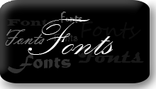

Photoshop доповнення
У цьому розділі Ви маєте змогу завантажити додаткові матеріали, які здатні полегшити Вашу працю у Photoshop'і, такі як:
Шрифти
Шрифт - графічний малюнок накреслень літер і знаків, що становлять єдину стилістичну та композиційну систему, набір символів визначеного розміру і малюнка.
Текстури

Текстура - це маленький графічний файл (зазвичай застосовується розмір 128х128 або 256x256 пікс.), При заповненні ним великої сторінки у Вас не буде видно "швів" в місцях стикування маленьких файлів. Крім заливки сторінки, текстури можна легко перетворити в візерунки (patterns) і використовувати їх при створенні стилю шару, або при роботі з інструментом "Візерунковий штамп".
Кисті
Кисть - це інструмент Photoshop, за допомогою якого можна малювати на будь-якому зображенні або на «чистому листі» нового документа. Кисті можуть бути різної форми - круглі (стандартні) з розмитими і чіткими краями, у формі листя дерев, квітів, вій, брів, блискавок, хмар, диму, абстрактні і багато-багато інших.
1234567890